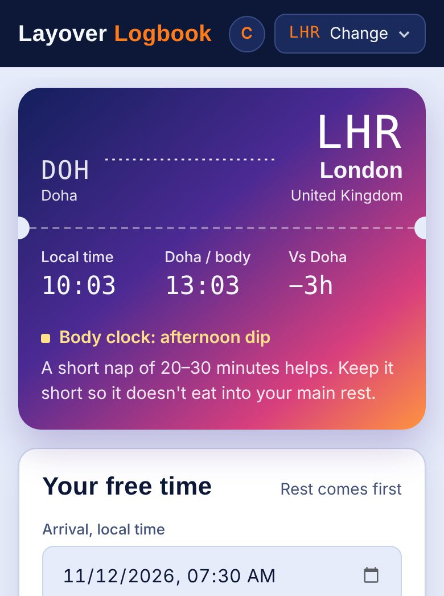

A mobile app for airline crew · Personal project · 2026
I designed this app from my own experience as airline cabin crew. Crew of any airline choose their home base and currency. It answers the questions every crew member has on a layover: how much free time do I really have, what's near my hotel, and where did my allowance go?
- 🕑Free-time planner: works out the real free window from arrival, pickup, rest and transfer times, with local, home-base and body-clock times
- 🌍3D route globe: an interactive WebGL globe that draws the route from your home base to the layover city, and a postcard photo of a typical landmark for every destination, loaded from Wikipedia
- 📍Live nearby search: map of cafés, restaurants, groceries, pharmacies and sights around the phone's location, with distance, walking time and a halal filter
- 💰Spending analytics: expenses in any currency, converted to your home currency at live rates, with charts by category, destination and month, allowance vs spending, and CSV export
- 🌙Fatigue tracking: a rest check against flight-time rules, time-zone shift and 7-day load charts built from saved layovers. Pro adds a roster check that reads a roster picture and checks it against flight time limits
- 📸Crew feed: a private, invite-only social feed where crew share photos, short videos, places and ratings for each city, with likes, comments, crew nicknames and reporting. Location data is removed from photos and videos on the phone before upload
- 📱Works like an app: installs on the iPhone home screen, runs offline, and offers an optional account to keep data on any phone
Best on a phone. On iPhone, open it in Safari and tap Share → Add to Home Screen.
